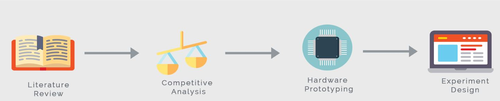
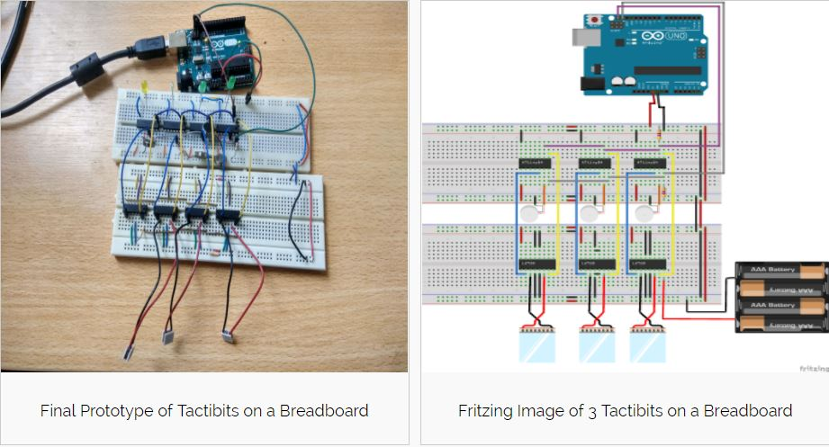
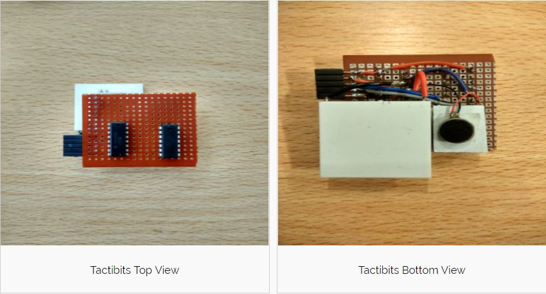
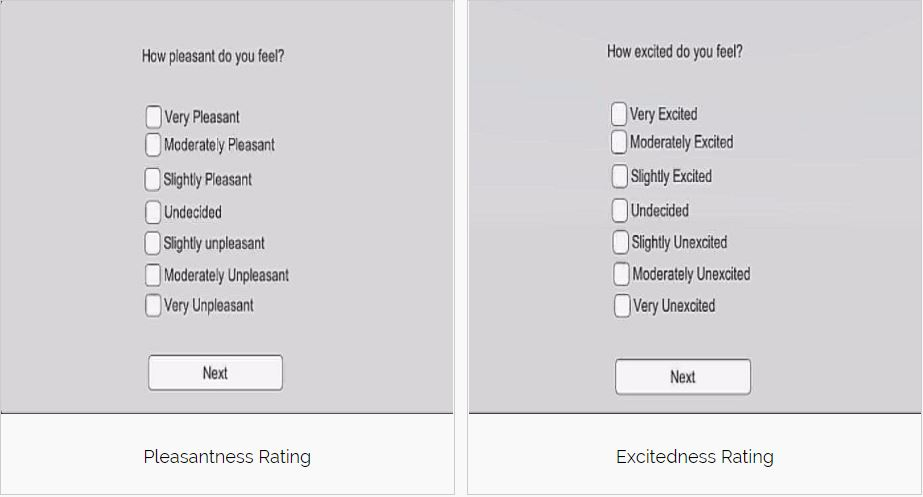

WHAT ARE TACTIBITS?
Touch is a primary human interaction channel. It can serve to not only facilitate interaction through tactile feedback but can also convey emotions and strengthen emotional ties between individuals. Its use is seldom considered in human-machine interaction as a means of communicating emotions. Tactibits are tactile modules that simulate the sense of touch.for conveying emotions during human-machine and human-human interactions via machines.
Supervisors: Dr Eric Lecolinet, Marc Teyssier at Telecom ParisTech, France
Duration: 3.5 months
Skills used: Arduino, Unity, Hardware Prototyping, Experiment Design
PROCESS
LITERATURE REVIEW
The sense of touch has been shown to trigger emotional attachment and to communicate physical connection. Social touch can be defined as touch occuring between individuals in a co-located space. Social Touch Technology is the use of haptic technology for augmenting experiences of social touch. This is underexplored in interactive systems which mostly rely on audio and visual modalities. The goal of this project was to develop a novel human-machine interaction technique and to design a user experiment to test its effectiveness.
RESEARCH QUESTION: How is emotional perception affected when vibrotactile touch patterns are combined with the thermal modality?
HARDWARE PROTOTYPING
Each Tactibit has a coin-shaped vibration motor to simulate vibration, a peltier to simulate the temperature of touch) an h-bridge to drive direction of current, and an ATtiny84 microcontroller to control all these components. I2C communication was setup between an Arduino as a master and ATtiny as slaves.
 EXPERIMENT DESIGN
I developed a software and user interface on Unity to test Tactibits on 12 participants. Three patterns, stroke, poke and hit were simulated..The independent variables were temperature,(hot, cold or room temperature) and vibration. The dependent variables were valence and arousal ratings of participants on a 7-point Likert scale. Through the software, one can set the temperature and vibration values, and customize touch patterns. Tactibits can be arranged to form any types of patterns. Participants answer the following questions after every trial of patterns is played.on the forearm. There are 18 trials per participant.
APPLICATIONS
Tactibits can serve to enhance user experience, convey affective information, strengthen sense of presence, etc, They also oofer a promising way of providing empathetic interfaces health assistive technologies. When placed on the back of mobile phones, Tactibits can be used to introduce touch as a medium of communication when people talk on the phone. Tactibits could also be used to study how different parts of the human body perceives simulated touch patterns.